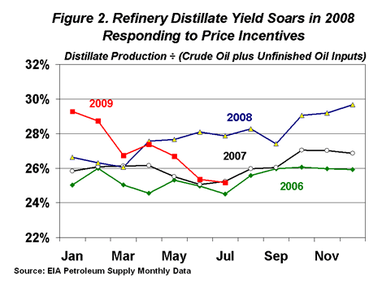

Released on October 28, 2009
(Next Release on November 4, 2009)
Changing Distillate Export Patterns
Distillate (including diesel) is the second largest petroleum product consumed in the United States, used for everything from fuel for trucks and trains to residential heating and even a small amount of power generation. Although still overshadowed by gasoline consumption within the United States, global trends have been rapidly increasing the demand for distillate. This is causing major changes in the United States’ role in the world distillate market.
For many years, the United States was a net importer of relatively small volumes of distillate, primarily from Canada and the Virgin Islands (Figure 1). Imports were generally seasonal, coinciding with greater demand for heating oil during the winter heating season when additional supplies from areas like Eastern and Western Europe and Latin America would occasionally surge.
This trade pattern changed significantly in the spring, summer, and fall of 2008 as wholesale prices for distillate soared above those for gasoline. Distillate prices have rarely been higher than gasoline during the summer months but, the summer of 2008 saw an unprecedented and sustained premium for distillate. A variety of factors were behind the unusually high margins. In South America, price controls were limiting Argentina’s production and export of natural gas, and a severe drought in Chile was reducing its hydroelectric generation. Distillate fuel for electrical generation was a convenient short-term substitute for these shortages. Prices began to rise quickly in the face of this extra demand, but several prominent distillate consumers, including China and India, shielded their domestic consumers from the increased costs through fuel subsidies and price controls. The normal economic process of higher prices encouraging reduced consumption was therefore muted or absent in these countries.
With distillate selling for more than gasoline from August 2007 through February 2009 (except during the hurricanes in September 2008), domestic refiners continued to increase distillate yields in 2008, nearly reaching an unprecedented 30 percent by the end of 2008 (Figure 2). From June through August 2008, distillate yields averaged almost 3 percent higher than typical, which resulted in about 380 thousand barrels per day of additional distillate production – a volume that was more than 10 percent of total U.S. distillate demand during those months. This extra production was occurring despite the fact that domestic demand had fallen over 9 percent compared to the previous year. Refiners were responding to a global, not a domestic, opportunity, continuing a dynamic that began in mid-2007. The United States became a distillate exporter, especially to South America and Western Europe. Net exports peaked in August 2008 at about 740 thousand barrels per day, before falling to some extent later in the year in the face of the coming winter heating season and a significant decline in wholesale prices due to the global economic downturn.
In 2009, the distillate market has returned somewhat toward earlier behavior. Distillate has once again been selling at a discount to gasoline this year as the world economy struggles. However, the United States has remained an exporter of distillate fuel. Net exports through July have averaged about 350 thousand barrels per day compared to almost 275 thousand barrels per day for the same period in 2008.
The results of these market changes are not easy to predict. Many of the issues that led to last summer’s distillate market swings are not expected to repeat regularly, but the broad trends are informative. The Energy Information Administration, the International Energy Agency, and others continue to project global distillate demand growing much faster than gasoline, especially in the developing world. The United States may therefore remain a distillate exporter for some time.

Gasoline and Diesel Prices Still Climbing
The U.S. average price for regular gasoline increased for the third consecutive week, shooting up a dime to $2.67 per gallon. For the first time since October 20, 2008, the national average price is now higher than it was the year before. Nonetheless, the average was $1.44 below the all-time high price set on July 7, 2008. Prices increased in all the major regions of the country. On the East Coast, the average surged nearly 13 cents to hit $2.65 per gallon. The average for the Lower Atlantic portion of the East Coast went up even more, soaring 14 cents. The average in the Midwest shot up 12 cents to $2.66 per gallon. Despite an increase of 11 cents, at $2.55, the price on the Gulf Coast remained the lowest of any region. In the Rocky Mountains, the average rose six cents to settle at $2.58 per gallon. The smallest increase occurred in the West Coast, where the average rose just under two cents to $2.89 per gallon. The price in California was essentially unchanged at $2.99 per gallon.
The national average price of diesel fuel climbed to $2.80 per gallon, a jump of a dime. Despite the increase, the average remained $0.49 below the price a year ago. Prices increased in all regions of the country. The averages on the East Coast, in the Midwest, and on the Gulf Coast all increased by about ten cents. At $2.82, the price on the East Coast was $0.58 below a year ago, while the Midwest average, at $2.79, was $0.45 less than the year-ago average. The price in the Gulf Coast remained the lowest of any region at $2.74 per gallon. The smallest increase of any region took place in the Rocky Mountains, where the price rose seven cents to $2.78 per gallon. On the West Coast, the average went up eight cents to $2.90 per gallon and the California price jumped nine cents to $2.97 per gallon.
Propane Stocks Draw Again
Propane inventories decreased again this week with total U.S. inventories dropping 0.6 million barrels to approximately 71 million barrels. The Midwest region, with a draw of 0.8 million barrels, saw the greatest decline due, in part, to seasonal crop-drying demand. The Gulf Coast and Rocky Mountain/West Coast regions realized slight declines, while East Coast regional inventories gained 0.2 million barrels. Propylene non-fuel use inventories increased their share of total propane/propylene inventories from 3.0 percent to 3.3 percent.
Residential Heating Oil Prices Continue Upward Trend
Residential heating oil prices rose during the period ending October 26, 2009. The average residential heating oil price increased 8.8 cents per gallon last week to reach 272.4 cents per gallon, a decrease of 33.5 cents per gallon from the same time last year. Wholesale heating oil prices gained 4.8 cents per gallon to reach 214.9 cents per gallon; 8.4 cents per gallon higher than last year at this time.
The average residential propane price rose 5.9 cents per gallon to reach 217.0 cents per gallon. This was a decrease of 35.7 cents per gallon compared to the 252.7 cents per gallon average from the same period last year. Wholesale propane prices gained 10.0 cents per gallon, from 108.5 cents per gallon to 118.5 cents per gallon. This was an increase of 13.4 cents per gallon when compared to the October 27, 2008 price of 105.1 cents per gallon.
Text from the previous editions of “This Week In Petroleum” is now accessible through a link at the top right-hand corner of this page.
| Retail Prices (Cents Per Gallon) | |||||||
| Retail Data | Changes From | Retail Data | Changes From | ||||
| 10/26/09 | Week | Year | 10/26/09 | Week | Year | ||
| Gasoline | 267.4 | Heating Oil | 272.4 | ||||
| Diesel Fuel | 280.1 | Propane | 217.0 | ||||
| Spot Prices (Cents Per Gallon*) | |||||||||||||||||||||||||||||||||||
 |
|||||||||||||||||||||||||||||||||||
|
|||||||||||||||||||||||||||||||||||
| *Note: Crude Oil WTI Price in Dollars per Barrel. | |||||||||||||||||||||||||||||||||||
| Stocks (Million Barrels) | |||||||
| Stocks Data | Changes From | Stocks Data | Changes From | ||||
| 10/23/09 | Week | Year | 10/23/09 | Week | Year | ||
| Crude Oil | 339.9 | Distillate | 167.8 | ||||
| Gasoline | 208.6 | Propane | 71.047 | ||||